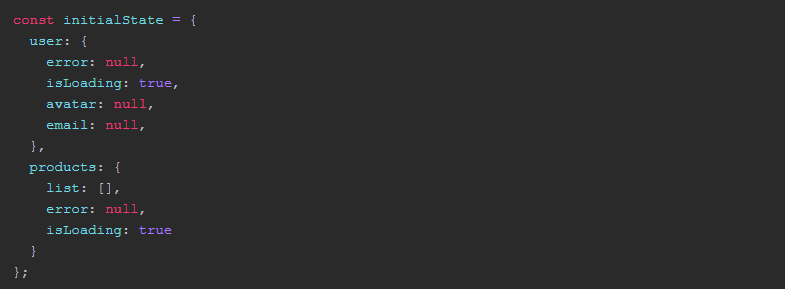
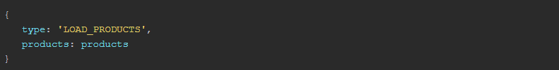
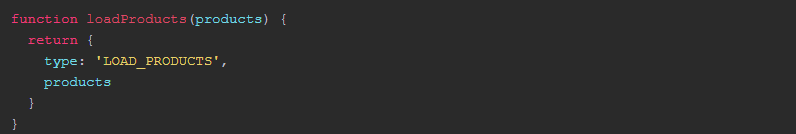
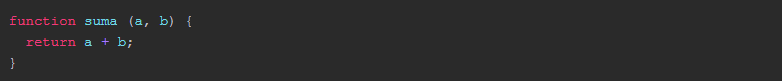
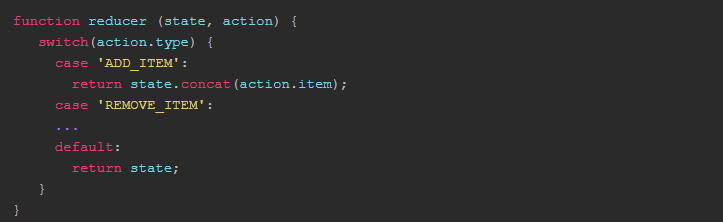
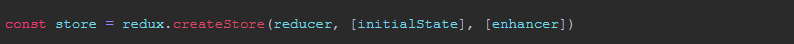
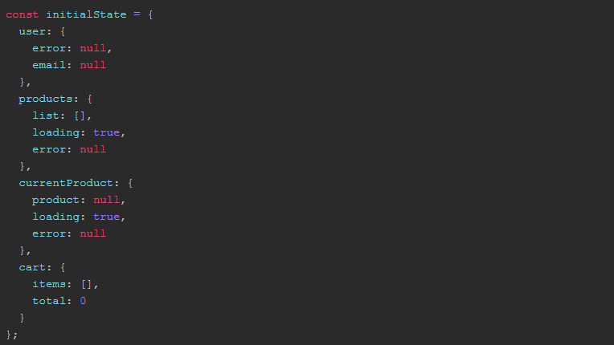
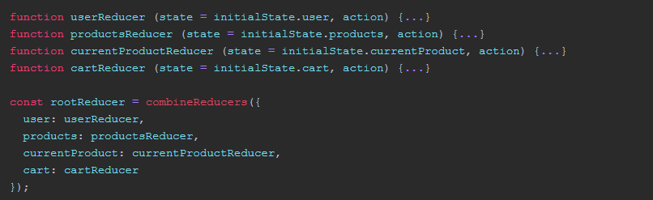

Redux basic concepts
In the previous post we saw what the Flux architecture was and how it worked. Being in some way, a substitute or evolution of the Model-View-Controller pattern.
Just as there is object-oriented programming and there are languages that implement it (like Java for example), or the MVC pattern and there are frameworks or libraries that implement it (such as AngularJS or Backbone for example), Redux is a library that implements the Flux design pattern, with some variations that we will see throughout the article.
Redux is a very small JavaScript library (barely 2KB in total), with very little code. Its API is only 5 functions and the most important thing is that it is pure JavaScript, so it is agnostic to the framework and can be used with any framework library (Angular, Polymer, React, etc ...)
What does Redux do?
Redux is in some way responsible for decoupling the global state of a web application (in Front-End) from the visual part, that is, the components.
Surely you ask yourself what is the status of the application?
The status of the application.
The status in a web or application can be several things, usually it is the data that you can receive through a REST API or WebService (for example a list of products), it also refers to the state of the UI at a certain moment, for example: a panel is displayed or not, the user information must appear or not, an error message, etc ...
To carry out this state management, Redux implements Flux but with some modifications:
The 3 key concepts of Redux
Redux is based on three main concepts:
1. A single "source of truth"
Flux proposes that there are several Stores to store the state. However Redux simplifies this by using a single Store. The whole state is stored in a tree. In JavaScript this would be achieved with a JavaScript object like the following:
2. The status is read-only
We can not modify the state directly, we can only read it to represent it in the view and if we want to modify it, we have to do it through actions.
An action is simply a JavaScript object that includes at least one type attribute that indicates the type of action we are issuing and in case there is data associated with the change or modification, a payload attribute with that data::
These actions are usually returned through an Action Creator that would be of this type:
3. Changes with pure functions.
Since we can not modify the state directly (it has to be through actions) and the state is stored in a single Store, to specify how to make the changes in the state tree we use pure functions called reducers.
A pure function is simply a function that, with the same input data, returns the same result. That is, the following function would be a pure example function:
This function for the same parameters, always returns the same. If we call a sum (1,2) it will always return 3. In this way it is easier to debug and find errors, and it is easier to test.
The reducer is simply that, a function that receives two parameters, the initial state and an action and depending on the type of action will perform one operation or another in the state. Always immutably, we can not modify the state, if not create a copy from the previous one. In this way it is easier to trace possible errors.
A reducer looks like this:
3. Changes with pure functions.
As I mentioned earlier, the API or functions that Redux exports are very few. We will explain here the most used when you create an application with Redux:
createStore
This function, as its name suggests, creates the central store where the global status of the application will be stored.
The function receives as a parameter a reducer and optionally an initial state and an enhancer that serves us to later add Middlewares. And it returns the created store.
With the Store created we have several methods that we can use:
store.getState (): Returns the current status of the store.
store.dispatch (action): Issues an action, is the only way to try to change the state.
store.subscribe (listener): Allows you to subscribe to the changes that occur. The listener is called each time an action is issued and a part of the state may have been changed.
There are others but these are the most used.
combineReducers
As in Redux we have a single store to store the entire state of the application. It is a good practice to have several reducers (one for each part broken down by the state) and with this function we can combine them in a single reducer to pass as a parameter to the createStore function.
Why do you have to reduce several? Because in this way we divide our problem into several parts and it is easier to modularize our application.
Por ejemplo si tenemos un estado como el siguiente:
It would be interesting to have a reducer that controls the part of the state dedicated to the user, another reducer for all the actions associated with the manipulation of the products. Another one for the current product and another for the management of the cart, so that we can do the following.
applyMiddleware
This function allows us to add Middlewares to Redux. Middlewares are functions that run between when an action is issued and the state changes. We can add a multitude of them, and one of the most used would be Redux-Thunk
bindActionCreators
This function allows us to link the dispatch function of the store with the action creators (these are functions that return the action object) so that we do not have to be importing the store in all the parts that we need to issue an action.
It is widely used with React and above all with the react-redux library that allows us to write less code if we use Redux with React
compose
It is widely used with React and above with the react-redux library that allows us to write less code if we use Redux with React